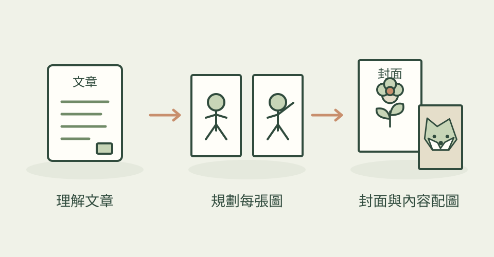

Baoyu Skills 是面向內容工作的技能合集。對美術使用者而言，值得先看的是文章配圖、封面、資訊圖與漫畫等任務的流程。
它怎麼幫忙
這些流程先理解內容與受眾，再選風格、規劃圖片，最後交給可用的生成工具。不同技能的輸出、設定與 provider 需求各不相同。
功能快速理解

先決定每張圖要表達的意思，再選擇適合的封面、插畫或資訊圖流程。
功能示意・本站繪製 放大查看可以這樣開口
這是一個可依需求修改的委託範例。
為這篇介紹工作習慣的文章規劃一張封面和三張配圖。先列出每張圖要說的意思，再決定用情境插畫還是資訊圖。
適合什麼工作
適合文章作者、內容編輯與社群視覺工作者。
開始之前
- 準備工具
- 依子技能準備可用的圖片生成服務與 agent 環境。
- 使用成本
- 生圖 provider 與 agent 依各自方案計費。
- 交付內容
- 依技能產出封面、插畫、資訊圖或其他內容素材
- 先留意
- 本篇為合集導覽；實際操作請先讀選定子技能的設定說明。
作者與來源
本文依作者公開說明整理，沒有實際執行這個專案。功能插圖由本站繪製，原作者範例另行標示；並非本站執行技能的測試結果。GitHub 星數為專案總量，觀察時間為 2026年10月30日 08:27（台北時間）。
與前次快照相比增加 26 星；這不是 GitHub Trending 排名。